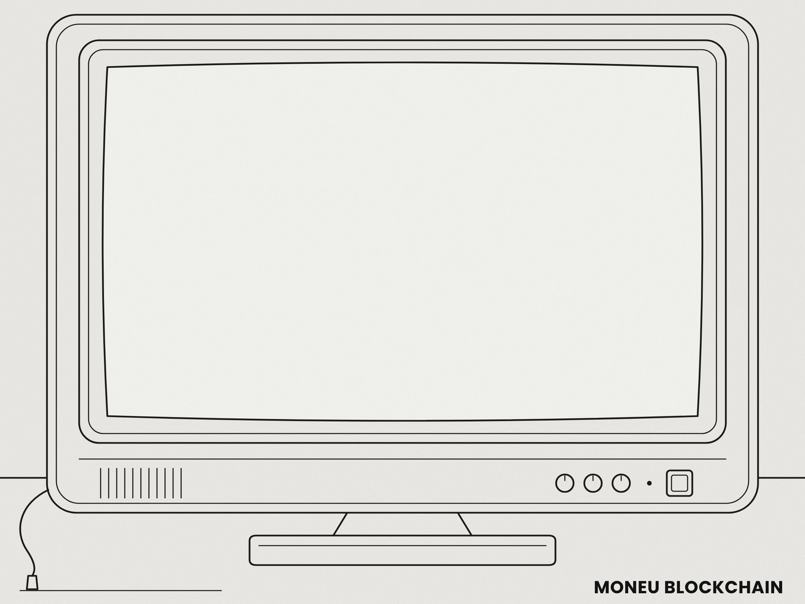

START A NODE ON WINDOWS
Download the MONEU PACKAGE FOR WINDOWS x86_64 and extract the ZIP file. Double click moneu.exe and a window opens with MONEU blockchain running. Wait for the node to fully sync. Check the sync level from time to time with getblockcount and compare the result with the block explorer. When the node is synced type these commands in the moneu> window.
moneu> createwallet PASSWORD moneu> makenoise PASSWORD moneu> walletunlock PASSWORD moneu> getnewaddress moneu> startmining ADDRESS 4

HARDWARE
Recommended minimum hardware: Windows 10 or 11 or Linux Ubuntu or Debian. You can run the MONEU blockchain on both Windows and Linux. A 256 GB drive gives the blockchain plenty of room for years to come. For smooth and trouble free running you need at least 16 GB of DDR3 RAM or better. The recommended minimum CPU for mining is an Intel i5. It is the chip found in old computers and in almost every cheap used laptop. If you have a gaming PC you can mine coins with your CPU or your graphics card. The choice is yours.
REQUIREMENTS WINDOWS
Minimum requirements for Windows.
Windows 10 or 11 64-bit.
A processor like an old Intel i5 or better.
16 GB of memory.
At least 256 GB of free disk space for many years of the blockchain.
An internet connection that stays on.
For GPU mining a graphics card with OpenCL support.
REQUIREMENTS LINUX
System requirements.
OS: Ubuntu 22.04 or newer or Debian.
Library: Boost 1.74 or newer.
Hardware: an old computer is fine.
$ sudo apt-get install -y build-essential cmake \
libboost-filesystem-dev libboost-system-dev \
libboost-thread-dev libboost-program-options-dev \
libssl-dev nlohmann-json3-dev
RECOMMENDED: OPEN P2P PORT 8327 WINDOWS
Windows Firewall often blocks incoming connections. Opening the P2P port 8327 lets other nodes connect to yours and helps the network.
The easy way. Type firewall in the Start menu and open Windows Defender Firewall with Advanced Security. Click Inbound Rules then New Rule. Choose Port then TCP and type 8327. Choose Allow the connection then tick all profiles. Give it the name MONEU and click Finish.
With a command. Open PowerShell as administrator and type
netsh advfirewall firewall add rule name="MONEU" dir=in action=allow protocol=TCP localport=8327
If you are behind a home router also forward TCP port 8327 to your computer in the router settings.
Keep port 8328 closed. It is the RPC port for your node and wallet.
INSTALL WINDOWS
Download the MONEU PACKAGE FOR WINDOWS x86_64. Right click the ZIP file and choose Extract All. Open the moneu folder and double click moneu.exe. A window opens with MONEU blockchain running. Type the commands in the moneu> window.
INSTALL LINUX
$ git clone https://github.com/natusor/MONEU $ cd MONEU $ cmake -S . -B build -DCMAKE_BUILD_TYPE=Release $ cmake --build build -j$(nproc) $ ./build/src/moneu-test-noise $ ./build/src/moneud -daemon
WALLET WINDOWS
moneu> createwallet PASSWORD moneu> makenoise PASSWORD moneu> walletunlock PASSWORD moneu> getnewaddress moneu> getwalletinfo moneu> getbalance ADDRESS
WALLET LINUX
$ ./build/src/moneu-cli createwallet "your-password" $ ./build/src/moneu-cli makenoise "your-password" $ ./build/src/moneu-cli walletunlock "your-password" $ ./build/src/moneu-cli getnewaddress $ ./build/src/moneu-cli getwalletinfo $ ./build/src/moneu-cli getbalance YOUR-ADDRESS
MINING WINDOWS
moneu> startmining ADDRESS 4 moneu> startmining ADDRESS gpu moneu> getmininginfo moneu> getwalletinfo moneu> getbalance ADDRESS moneu> stopmining
MINING LINUX
$ ./build/src/moneu-cli startmining YOUR-ADDRESS 2 $ ./build/src/moneu-cli startmining YOUR-ADDRESS gpu $ ./build/src/moneu-cli getmininginfo $ ./build/src/moneu-cli getwalletinfo $ ./build/src/moneu-cli getbalance YOUR-ADDRESS $ ./build/src/moneu-cli stopmining
COMMANDS WINDOWS
MONEU commands for Windows. Type them in the moneu> window.
- stop
- stop the node
- getinfo
- node information
- getblockcount
- current block height
- getblockchaininfo
- blockchain state
- getconnectioncount
- number of connections
- getnetworkinfo
- network information
- getpeerinfo
- connected nodes
- uptime
- how long the node runs
- help
- list of all commands
- getbestblockhash
- hash of the newest block
- getblockhash HEIGHT
- hash of the block at that height
- getblock HASH
- block data
- getrawtransaction TXID
- one transaction
- getdifficulty
- current difficulty
- getmempoolinfo
- waiting transactions
- addnode IP:PORT
- connect to a node
- setnetworkactive true
- turn the network on or off with false
- createwallet PASSWORD
- create a wallet
- makenoise PASSWORD
- create the noise file
- walletunlock PASSWORD
- unlock the wallet
- walletlock
- lock the wallet
- loadwallet PASSWORD
- load the wallet
- getnewaddress
- new address
- listaddresses
- all addresses
- getwalletinfo
- wallet balance and status
- getbalance ADDRESS
- balance of one address
- sendtoaddress ADDRESS AMOUNT
- send coins
- sendrawtransaction HEX
- send a prepared transaction
- dumpmnemonic PASSWORD
- show the 24 words (SECRET)
- dumpprivkey ADDRESS PASSWORD
- show a private key (SECRET)
- startmining ADDRESS 4
- mine on the CPU with 4 threads
- startmining ADDRESS gpu
- mine on the graphics card
- getmininginfo
- mining status
- stopmining
- stop mining
- exit
- close the window and the node keeps running
NODE
BLOCKS
NETWORK
WALLET
MINING
NODES
Start your MONEU node and mine solo.
CARE
Build from a clean slate and delete any old build folder first. When the tests say ALL TESTS DONE the node is ready. Write down the twenty four words the wallet prints and use the same password for the wallet and for the noise file. Building that file takes a few minutes and works the computer hard on purpose so build it on a real machine and not on a virtual one.
Copy the whole wallet folder to another drive with the noise file included. The seed phrase alone will not bring your coins back without it. Keep one wallet per computer and watch the leaf counter shown as noise_leaves_remaining in getwalletinfo. Every payment uses four leaves out of the 1 048 576 your computer made so the file is good for 262 144 payments. When it runs low make a wallet on another computer and send the coins there.
Leave the rpcpassword line out and the node uses a cookie file for RPC access instead. If you set your own password make it long and lock the config file down. The node can run through Tor if you want it to.
SHIELD
Only you can send your coins. If somebody works out your private key even with a quantum computer they still cannot move anything without your noise file and that file never leaves your computer.
You can keep it on the same drive as the node or copy it to an external drive and plug that in only when you pay somebody.
Anyone can build an external device that collects entropy and feed it into their wallet.
SPECS
- Consensus
- Proof of work with a single SHA-256
- Signatures
- Ed25519
- Block time
- 600 seconds
- Max supply
- 30 000 000 MONEU
- Smallest unit
- wage. 1 MONEU = 100 000 000 wage
- Noise file
- 32 MiB for 262144 payments
- Premine
- None
- Presale
- None
- Licence
- MIT
- Coin type
- 8328 registered in SLIP-0044
Mining is the only way coins come into existence.
The chain has been running non stop since the first block.
CONFIG
rpcuser=moneu
rpcpassword=PUT-A-LONG-RANDOM-STRING-HERE
rpcbind=127.0.0.1
rpcport=8328
rpcallowip=127.0.0.1
port=8327
listen=true
portmap=1
dbcache=450
txindex=true
loglevel=info
logtofile=true
maxlogsize=10
logips=false
$ openssl rand -base64 32 | tr -dc 'a-zA-Z0-9' | head -c 32 $ chmod 600 ~/.moneu/moneu.conf
GENESIS BLOCK
The first block of the chain byte for byte. Any node can print it.
MONEU Genesis BlockRaw Hex Version00000000 01 00 00 00 00 00 00 00 00 00 00 00 00 00 00 00 ................ 00000010 00 00 00 00 00 00 00 00 00 00 00 00 00 00 00 00 ................ 00000020 00 00 00 00 43 39 65 88 04 9B 5E 2E 5B 9E 52 72 ....C9e...^.[.Rr 00000030 0F 19 30 D3 EE EF 64 DE 59 E4 31 E1 82 0A 0A 39 ..0...d.Y.1....9 00000040 BC 3A 21 64 00 00 00 00 00 00 00 00 00 00 00 00 .:!d............ 00000050 00 00 00 00 00 00 00 00 00 00 00 00 00 00 00 00 ................ 00000060 00 00 00 00 AB 3F 7F 6A 00 00 00 00 00 00 00 00 .....?.j........ 00000070 FF FF 00 1D 60 4B CF 65 01 00 00 00 78 01 00 00 ....`K.e....x... 00000080 01 00 00 00 01 00 00 00 00 00 00 00 00 00 00 00 ................ 00000090 00 00 00 00 00 00 00 00 00 00 00 00 00 00 00 00 ................ 000000A0 00 00 00 00 00 00 00 00 FF FF FF FF 00 00 00 00 ................ 000000B0 00 00 00 00 00 00 00 00 00 00 00 00 00 00 00 00 ................ 000000C0 00 00 00 00 00 00 00 00 00 00 00 00 00 00 00 00 ................ 000000D0 00 00 00 00 00 00 00 00 00 00 00 00 00 00 00 00 ................ 000000E0 00 00 00 00 00 00 00 00 00 00 00 00 00 00 00 00 ................ 000000F0 00 00 00 00 00 00 00 00 00 00 00 00 00 00 00 00 ................ 00000100 00 00 00 00 00 00 00 00 00 00 00 00 00 00 00 00 ................ 00000110 00 00 00 00 00 00 00 00 00 00 00 00 00 00 00 00 ................ 00000120 00 00 00 00 00 00 00 00 00 00 00 00 00 00 00 00 ................ 00000130 02 00 00 00 00 AD F4 CA 01 00 00 00 25 76 A8 20 ............%v. 00000140 8F B3 11 B4 E4 A0 9E 77 5D 0E 99 10 E2 FF 55 32 .......w].....U2 00000150 54 69 E8 B7 A0 B7 08 5B D2 FD 1B 0C 80 A3 16 C5 Ti.....[........ 00000160 88 AC 00 00 00 00 00 00 00 00 85 6A 4C 82 35 34 ...........jL.54 00000170 36 38 36 35 32 30 34 37 37 35 36 31 37 32 36 34 6865204775617264 00000180 36 39 36 31 36 65 32 30 35 37 36 35 36 35 36 62 69616e205765656b 00000190 36 63 37 39 32 30 33 31 33 34 32 66 34 31 37 35 6c792031342f4175 000001A0 36 37 32 66 33 32 33 30 33 32 33 36 32 30 34 37 672f323032362047 000001B0 36 66 36 65 36 35 32 30 37 32 36 66 36 37 37 35 6f6e6520726f6775 000001C0 36 35 33 61 32 30 34 31 34 39 32 30 37 34 37 32 653a204149207472 000001D0 36 39 36 33 36 62 37 33 32 30 36 39 37 34 37 33 69636b7320697473 000001E0 32 30 37 34 36 35 37 33 37 34 36 35 37 32 37 33 2074657374657273 000001F0 00 00 00 00 00 00 00 00 ........